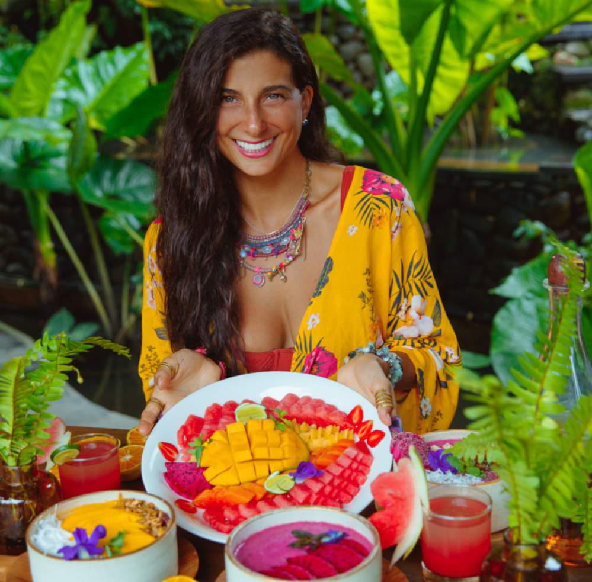
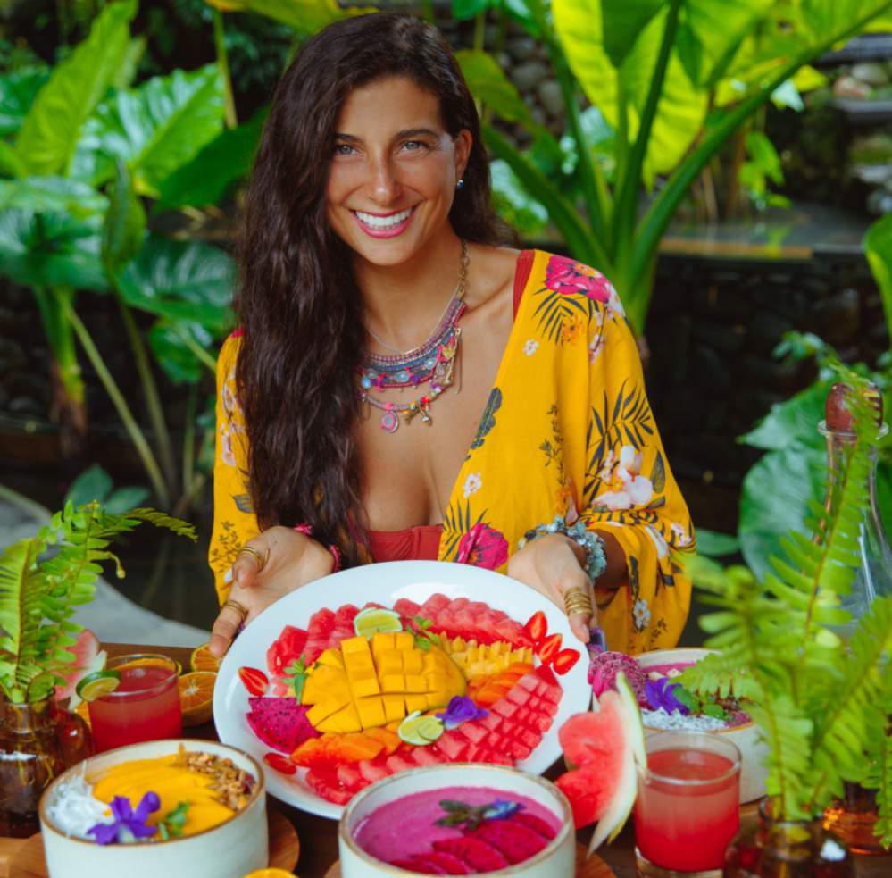

WELCOME, MY FRIENDS!
My name is Kristina Carrillo-Bucaram, and many know me
as "FullyRaw Kristina."
I'm a writer, speaker and raw vegan activist who educates
and guides people who are sick and tired of feeling "sick
and tired" and are ready to take more control over their
health and experience the compassionate lifestyle one can
achieve by living FullyRaw.
FullyRaw is not just a diet. Its a lifestyle. I like to think of
this way of eating as an awakening and way of
rediscovering connection with ourselves, with others, and
with our earth. I really believe it begins with food, and then
it becomes a mind, body, and spirit transformation. It's a
way for you to build the foundation that will lead you to a
healthier, happier, and more abundant life. I'm here to help
guide you through the journey of returning to yourself. As
you dive into these programs, the recipes, the videos, the
workshops and more, you're going to discover just how
powerful fruits and vegetables really are for our bodies. I
truly believe that food is medicine because I have seen its
substantial transformational abilities myself. It's a mind,
body, spirit journey.

 
